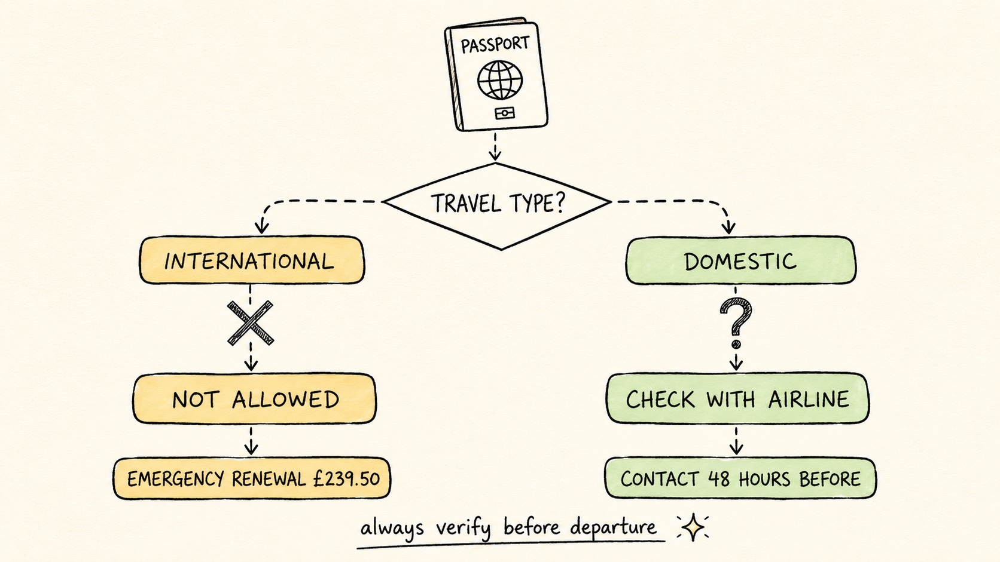

Can You Travel with an Expired Passport? UK Rules
Travel Document Vault
Key Takeaways
- Absolute rule: No international travel with an expired passport. Airlines and border control will refuse you.
- Domestic exceptions: UK to Ireland and Isle of Man may accept alternative photo ID; contact your airline first.
- Emergency renewal: HM Passport Office runs an Online Premium service for renewals only, with a same-day or next-day appointment when slots are available. Check the current fee on gov.uk before you book.
- Travel insurance: Most policies void claims if your passport was expired during travel.
- If abroad: Contact the nearest British embassy or consulate for an emergency travel document.
Whether a passport that expires before the return date causes a problem depends entirely on where the trip is going. Some countries ask only that it be valid on the day of entry. Many ask for three or six months beyond it.
No - an expired passport won't work for international travel. Airlines check validity before issuing boarding passes, and if your passport is expired they'll deny you access to the plane. Border control does the same check at your destination, so there's no way round it: you'll need to renew before you travel internationally.
What follows is how this plays out in practice: your limited options, why time matters so much, and what to do to avoid the check-in panic.
The Absolute Rule: No International Travel with an Expired Passport
His Majesty's Passport Office is clear on this: your passport must be valid on the day you travel - not just on arrival, not just for part of the trip, but on the day you board the aircraft.
When you get to check-in, the agent runs your passport number through their system and sees the expiry date. If it's in the past, they won't issue a boarding pass, and it makes no difference if you're arriving home the day after it expires. The same thing happens at border control in your destination: they see the expiry, they deny entry.
This rule applies to all international travel, flights to Europe and ferry crossings alike, whether you're barely past expiry or booked months in advance. If you need to show your passport at any border, it must be valid on that day.
The only exception is a British emergency travel document, issued by the Foreign Office when you are already abroad in a genuine emergency, and even then it exists only to get you home - not to permit further travel.

Can You Book a Holiday with an Expired Passport?
Booking is not the same as boarding. Nothing stops you paying for flights and a hotel while your passport is out of date, because no one checks the document at the point of sale. The check happens at the airport, and by then the passport has to be valid.
So the question worth asking is not whether you can book, but whether the renewal will land before you fly. Passport offices publish their current processing times, and those move with demand, so check the figure on the day rather than relying on what it was last year.
If the timings look tight, the safer order is to renew first and book once the new passport is in your hand. Airlines are generally under no obligation to refund a ticket you cannot use, and travel insurance rarely covers a document you knew had expired. Our guide to how long passport renewal takes sets out what the timelines usually look like.
A renewal that is already in progress is a different question, and it turns on whether you handed the old passport in. We answer that one on its own page: whether you can travel on your old passport while renewing.
Domestic Travel: Limited Flexibility with Alternative ID
Domestic travel within the UK and Ireland works a little differently: airlines may accept alternative photo identification like a UK driving licence or national ID card in place of a passport. What's acceptable varies significantly by airline and destination, though, so you can't assume any particular ID will work.
That doesn't mean you can skip renewing your passport. Airlines vary in their policies on domestic routes: some require a passport for all travel to Ireland even though the Common Travel Area technically permits ID-card travel, whilst others accept a driving licence. Airlines update their rules too, and your carrier may have changed theirs since you last flew, so you cannot assume what worked before will work again.
If you are considering domestic travel with an expired passport, contact your airline well before your flight and ask explicitly: "My UK passport is expired. Will you accept my UK driving licence instead?" Get confirmation in writing if you can, as arriving at check-in with an alternative ID and no prior confirmation is how people miss flights.
Emergency Renewal: The Premium Service Pathway
If your trip is imminent and your passport is expired, His Majesty's Passport Office offers a Premium service designed for exactly this scenario, with a same-day appointment or one the next working day depending on availability. HM Passport Office publishes the current fee on gov.uk, and it covers the appointment and renewal together rather than being charged on top of the standard fee. It gets you a passport far faster than the standard route, though how much faster depends on the appointment you can get. Note the Online Premium service is for renewals only, not first adult passports.
This is the official emergency route for genuine travel constraints. HM Passport Office publishes its current standard processing guidance on gov.uk, and it's worth checking that before you assume you have time to wait. When a trip genuinely can't wait, the Premium option removes the uncertainty.
The catch is that you must have an available appointment slot, which fill up quickly during summer holidays and school breaks. If you discover your passport is expired on a Friday before a Monday trip you may find no Premium slots available, as booking happens online at gov.uk with live availability. When your preferred date shows no slots you genuinely have no other option that day.
You'll also need your old passport to apply regardless of its expiry date, and if it is lost or stolen you'll need to cancel it with His Majesty's Passport Office (you can do this at gov.uk) before renewing; a police report is generally only needed for insurance purposes. Plan accordingly if your passport is damaged as well as expired.
Travel Document Vault warns you months ahead of an expiry date, and keeps an offline copy if plans go wrong anyway. Download on the App Store and Google Play.
What Airlines and Border Control Actually Check
Airlines use Timatic, an IATA system that cross-references your passport number, nationality, and destination with entry requirements, telling the check-in agent instantly whether you are permitted to travel when they scan your passport. If your passport is expired, Timatic flags it red and the agent cannot override this decision even if you plead or show a boarding pass from weeks ago.
Border control repeats the check on arrival, sometimes twice: once as you leave the UK and again as you enter your destination. An expired passport will be caught no matter how careful you are.
The only grey area is how airlines and border control handle passports that are "expiring soon" but not yet expired, where some agents are strict about the 6-month rule for certain destinations and others are not. Once your passport has actually crossed the expiry date, though, there's nothing left to debate.
Travel Insurance and Expired Documents
Most travel insurance policies include a void clause for expired or invalid travel documents. Insurers can reject your entire claim if you travelled with an expired passport - the language typically reads something like: "This policy is void if the policyholder travelled with an invalid or expired travel document."
This applies whether your passport expired before you left the UK or while you were abroad, and whether the trip was a one-day weekend or a three-month round-the-world journey. A single-day overstay on your passport expiry date can sink an otherwise valid claim.
If your passport has already expired and you are searching for what to do next, our companion article covers that step-by-step. If you have a trip coming up and your passport is approaching expiry, this is the moment to renew rather than wait until it expires, which means paying for the Premium service instead of the standard fee. Check your family's passports now before booking any trip.
Set expiry reminders months in advance, not weeks. Travel Document Vault tracks expiry dates for every passport in your household and sends reminders from eight months out, then again as expiry approaches, so you renew on standard processing and avoid emergency fees.
If You're Already Abroad and Your Passport Expires
Your passport expiring while you're still abroad is the hardest scenario to plan for. If it expires before you return, you cannot board a flight or ferry home, and you'll need to contact the nearest British embassy or consulate for an emergency travel document, sometimes called an ETD or emergency passport, which is valid only for getting home.
The process is slow and bureaucratic. You'll need to provide proof of identity and pay a fee, the current amount published by the Foreign, Commonwealth and Development Office. Processing time varies by embassy and by how urgent your situation is, so ask the consulate what to expect as soon as you contact them. The emergency document only covers the specific journey back to the UK; it isn't a tourist passport, and it won't permit onward travel.
Setting reminders months ahead, rather than scrambling the week before you fly, is what keeps this from happening in the first place. If your passport expires within 6 months of your trip, start the renewal process now before you commit to travel dates.
Common Misunderstandings About Passport Validity
Travellers often confuse their passport's own validity date with destination-specific rules. Your passport is valid until the date printed in it - that's the baseline. But some countries require it to remain valid for a specific period beyond your arrival date, and that's a separate requirement from expiry itself.
Many countries enforce a six-month rule requiring your passport to remain valid for at least six months beyond your planned departure date, while some enforce three months and others enforce one month. None of these rules permit travel with an expired passport because they set a stricter standard where renewal must happen even earlier than the passport's own expiry date.
Do not assume you can travel "because you're coming back before it expires": your passport must be valid on the date you board your outbound flight, and if it expires the day after you return, you still cannot travel.
Before you rely on this: it's a blog, not an official source. Rules and details change, and your situation may be different. We check what we publish, and we can still be wrong or out of date. If something here matters to your plans, confirm it with the authority that handles it before you act.
Frequently Asked Questions
Can I travel with an expired passport if I have a visa?
No. Your visa is attached to your passport and only valid if the passport itself is valid. If your passport is expired, the visa becomes invalid regardless of its own expiry date. You cannot use an expired passport even with a valid visa.
What about EU travel once ETIAS launches?
The Entry/Exit System (EES), now rolling out, and ETIAS, expected to follow it, will digitalise entry records. However, they do not change the passport validity requirement. You will still need a valid passport to enter the Schengen area or any EU country. An expired passport will be rejected regardless of your ETIAS status.
Can I apply for emergency renewal while abroad?
Not through the standard UK Passport Office route. If you are abroad and your passport expires, you must contact the nearest British embassy or consulate. They handle emergency travel documents, not the main passport office.
Does a damaged passport count as expired?
No, but you still cannot travel with it. A damaged passport may be rejected by airlines or border control even if it is not yet expired. If your passport is torn, water-damaged, or has significant marks on the data page, it is safer to renew it rather than risk being refused boarding or entry.